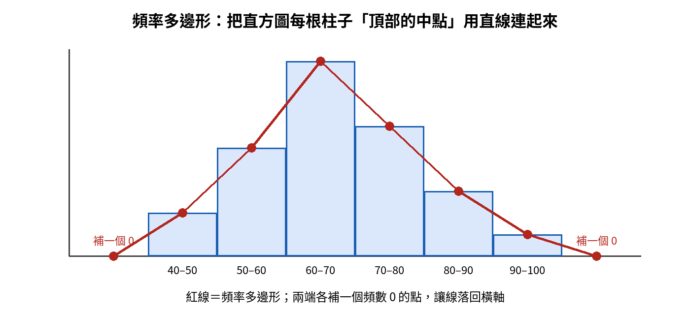
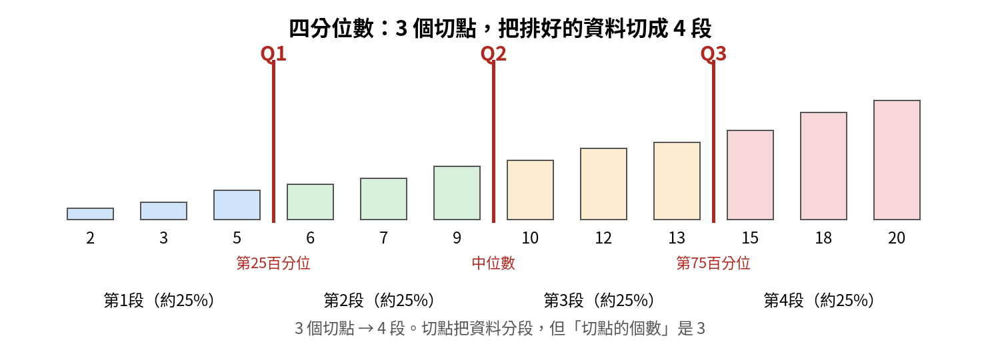
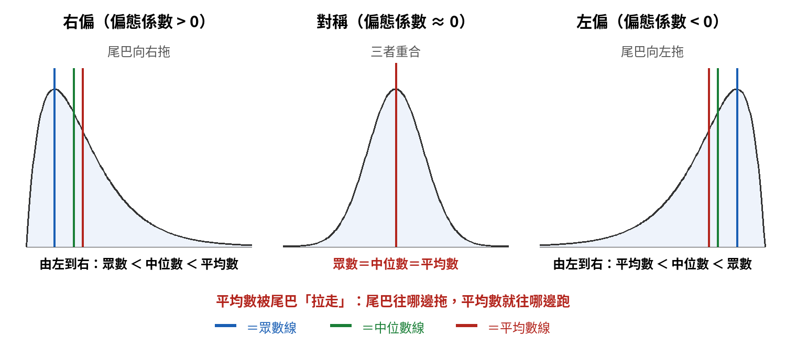
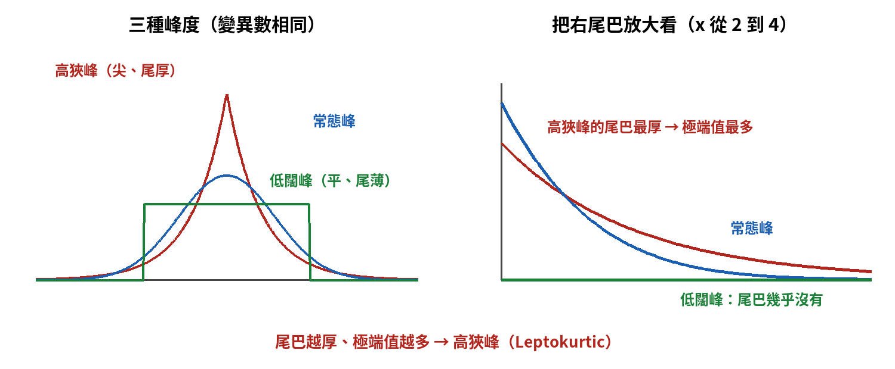
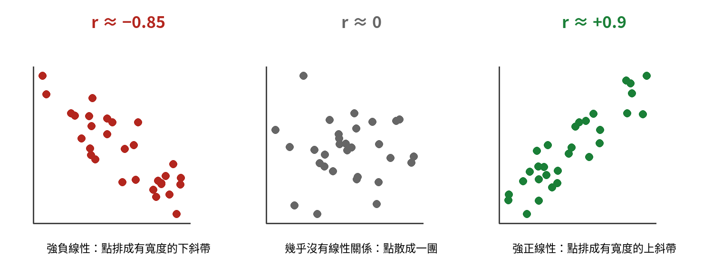
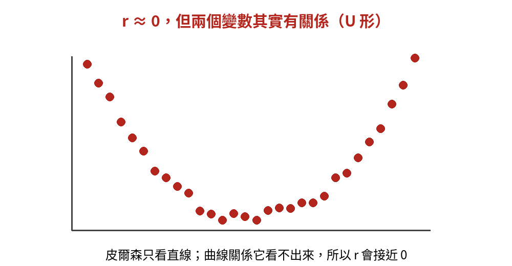
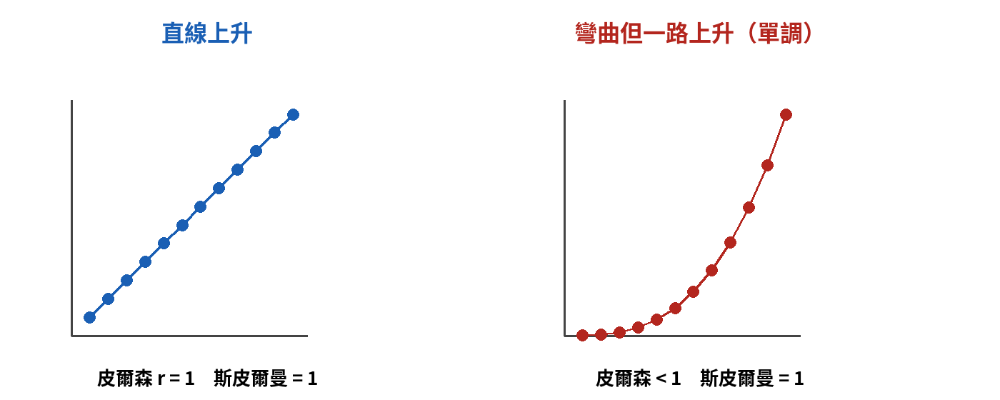

敘述性統計與資料摘要｜觀念圖解複習
四組最容易混淆的觀念，每組都照「為什麼需要它 → 一步步搭起來 → 對照表 → 易錯提醒」整理。先看圖，再讀文字。
單元 ①圖表和表格怎麼選
為什麼需要這個概念？ 同一批資料，用錯圖就看不出重點。選圖其實只要回答兩個問題：我手上是什麼類型的資料？以及我想看出什麼？兩個答案一對上，圖就決定了。
一步步搭起來
- 先分資料類型：類別資料是「分成幾類」，又分名目（產品 A、B、C，男／女，沒有大小順序）與順序（滿意度高中低、名次，有先後但間距不一定相等）；數值資料是「用數字量出來」，又分離散（可數，例如來客數、訂單筆數）與連續（可量，例如身高、等候時間）。
- 再問想看什麼：數量多寡？占比？兩個變數有沒有關係？隨時間怎麼變？分佈長什麼樣？
- 最後查表：資料類型＋目的，對到一種圖或表。
| 我想看什麼 | 資料類型 | 用什麼 |
|---|---|---|
| 每一類各有多少 | 單一類別 | 長條圖 |
| 各部分占整體幾 % | 類別比例 | 圓餅圖、堆疊長條圖 |
| 兩個數字會不會一起變化 | 兩個連續數值 | 散佈圖 |
| 數字隨時間的走勢，還要比較好幾條 | 時間序列 | 折線圖（多條線就畫多線折線圖） |
| 一個數字的分佈形狀 | 單一連續數值 | 直方圖、箱型圖、密度圖、頻率多邊形 |
| 兩個類別之間有沒有關聯 | 兩個類別 | 列聯表（交叉表） |
頻率多邊形怎麼畫
它是直方圖的變形，三步完成：
- 先畫直方圖，找出每根柱子頂部的中點。
- 把這些中點用直線依序連起來。
- 左右兩端各補一個「頻數 0」的點，讓線落回橫軸，成為封閉的多邊形。

它有一個長得很像的兄弟叫累積次數多邊形（又稱肩形圖），兩者的點畫在不同位置：
| 頻率多邊形 | 累積次數多邊形 | |
|---|---|---|
| 點畫在哪裡 | 每組的組中點 | 每組的組上限（以下累積） |
| 縱軸是什麼 | 該組的次數 | 到這一組為止的累積次數 |
| 起點與終點 | 兩端各補一個次數 0 的點，落回橫軸 | 從第一組的下限、累積 0 開始，最後到總筆數 |
| 線的形狀 | 有升有降，看分佈形狀 | 只升不降（可持平），看「某個值以下有多少筆」 |
列聯表是什麼
列聯表是一張表，不是圖。列放一個類別變數（例如性別），欄放另一個類別變數（例如有沒有購買），每一格填「同時符合兩個條件的人數」。有了這張表，就能進一步用卡方檢定看兩個類別有沒有關聯。
單元 ②分散程度：變異數、四分位數、柴比雪夫不等式
為什麼需要這個概念？ 平均數只告訴你「中間在哪裡」，卻看不出資料是「大家都差不多」還是「彼此差很多」。這一單元的三個工具，都在回答「資料散得多開」。
變異數：一步步搭起來
- 先算平均數。
- 看每個數字離平均差多遠。
- 把每個差距平方，避免正負互相抵消。
- 全部加起來再平均。
| 資料 | 平均 | 每個差距 | 變異數 |
|---|---|---|---|
| 5、5、5、5 | 5 | 0、0、0、0 | 0（完全沒有分散） |
| 3、5、5、7 | 5 | −2、0、0、+2 | 大於 0（有分散） |
| 1、5、5、9 | 5 | −4、0、0、+4 | 更大（更分散） |
資料全部一樣時，每個數字都等於平均，差距全是 0，變異數就是 0。變異數越大，資料越分散。
小補充：上面第 4 步「除以資料筆數」是母體變異數；用樣本估計母體時，通常改成除以「筆數減 1」，叫樣本變異數。兩種算法遇到全部相同的資料，結果都是 0。
四分位數：3 個切點、4 段
平均數容易被極端值拉走。把資料由小到大排好，再平均切成幾段，就能更穩地看出資料落在哪裡。要切成 4 段，需要切 3 刀，這 3 個切點就是 Q1、Q2、Q3。
- Q1：第 25 百分位，前四分之一的位置。
- Q2：第 50 百分位，也就是中位數。
- Q3：第 75 百分位，前四分之三的位置。

Q3 減 Q1 叫四分位距（IQR），代表中間一半的資料散得多開，箱型圖的「箱子」就是它。
柴比雪夫不等式：不管什麼形狀都成立的保證
常態分佈有一套好用的經驗法則：約 68%、95%、99.7% 的資料落在平均 ±1、2、3 個標準差內。但現實資料不一定是常態，這時可以改用柴比雪夫不等式。
它說的是：距離平均 k 個標準差以內，至少有 1 − 1/k² 的資料（k 要大於 1 才有意義）。
| k（幾個標準差） | 算式 1 − 1/k² | 至少有多少資料在範圍內 | 常態分佈的實際比例（對照） |
|---|---|---|---|
| 2 | 1 − 1/4 | 75% | 約 95% |
| 3 | 1 − 1/9 | 約 88.9% | 約 99.7% |
| 4 | 1 − 1/16 | 93.75% | 幾乎 100% |
- 關鍵字一：「至少」。它給的是保守的下限，所以數字比常態分佈的實際比例低。
- 關鍵字二：「任何分佈」。不要求對稱、不要求是常態，只要平均數和標準差存在就成立。
單元 ③分佈的形狀：偏態與峰度
為什麼需要這個概念？ 平均數和標準差告訴你「中間在哪、散多開」，卻看不出分佈的形狀。偏態回答「有沒有歪向一邊」，峰度回答「尾巴厚不厚、極端值多不多」。
偏態：一步步搭起來
- 先看尾巴往哪邊拖，不是看山峰在哪。
- 尾巴往右拖 → 右偏 → 偏態係數大於 0（又叫正偏）。
- 尾巴往左拖 → 左偏 → 偏態係數小於 0（又叫負偏）。
- 左右差不多 → 對稱 → 偏態係數接近 0。
- 平均數被尾巴拉走：平均數對極端值很敏感，尾巴往哪邊，平均數就往哪邊跑；眾數留在山峰，中位數夾在中間。

| 偏態係數 | 形狀 | 尾巴 | 平均、中位、眾數的順序（由小到大） |
|---|---|---|---|
| > 0 | 右偏（正偏） | 向右 | 眾數 ＜ 中位數 ＜ 平均數 |
| ≈ 0 | 對稱 | 兩邊一樣 | 三者差不多 |
| < 0 | 左偏（負偏） | 向左 | 平均數 ＜ 中位數 ＜ 眾數 |
注意方向只能單向推：對稱分佈的偏態一定是 0，但偏態為 0 不保證對稱，有些不對稱的分佈左右剛好抵消也會算出 0，要搭配圖形確認。
記法：不用硬背兩種順序，只要記住「平均數通常站在尾巴那一側」，另外兩個的順序就跟著出來。這是單峰、明顯偏斜時的常見規律，少數特殊分佈會有例外，考試以這張表為準。
峰度：看尾巴，不只看尖不尖
| 名稱 | 英文 | 峰度係數（超額峰度） | 尾巴 | 極端值 |
|---|---|---|---|---|
| 高狹峰 | Leptokurtic | ＞ 3（超額 ＞ 0） | 厚 | 多 |
| 常態峰 | Mesokurtic | ＝ 3（超額＝0） | 中等（以常態分佈為基準） | 普通 |
| 低闊峰 | Platykurtic | ＜ 3（超額 ＜ 0） | 薄 | 少 |
超額峰度＝峰度係數 − 3，把常態分佈校正成 0。題目說「峰度為 0 代表常態」時，指的是超額峰度；說「峰度為 3」時，指的是原始的峰度係數。兩種寫法都會出現，先看清楚是哪一種。

教材常說高狹峰「尖」，這個印象沒錯，但更準確的重點是尾巴的極端值：在變異數相同的條件下，高狹峰的尾巴比常態更厚，極端值更常出現；低闊峰的尾巴比常態更薄。
單元 ④相關係數：皮爾森與斯皮爾曼
為什麼需要這個概念？ 想知道兩個東西是不是一起變化，例如廣告費和業績。相關係數把這種關係壓成一個介於 −1 到 +1 的數字。下面先講皮爾森，再講斯皮爾曼，最後放在一起比較。
皮爾森相關係數 r：三個資訊分開讀
- 正負號＝方向。正：一個升，另一個也升。負：一個升，另一個降。
- 絕對值＝強度。越接近 1 越強，越接近 0 越弱，跟正負號無關。
- 只看「直線」關係：適用於兩個等距或比率尺度的數值變數，衡量的是線性關係。

看圖估 r 的感覺：|r| 約 0.98 時點幾乎排成一條直線；0.85 到 0.9 是方向很清楚、但有明顯寬度的斜帶（上圖）；0.5 左右只看得出大致趨勢。
| r 的值 | 方向 | 強度 | 白話 |
|---|---|---|---|
| +0.9 | 正 | 強 | 一個升，另一個也明顯升 |
| −0.85 | 負 | 強（0.85 接近 1） | 一個升，另一個明顯降 |
| −0.1 | 負 | 很弱 | 幾乎看不出直線趨勢 |
| 0 | 無 | 無 | 沒有直線趨勢 |
不同資料，配不同的關聯方法
| 兩個變數是什麼 | 常用的關聯方法 |
|---|---|
| 兩個等距或比率尺度的數值 | 皮爾森相關係數 |
| 兩個次序資料（名次、等級） | 斯皮爾曼等級相關係數 |
| 兩個名目類別 | 列聯表、卡方檢定 |
| 一個類別、一個數值 | 分組比較（例如各組平均、並排箱型圖） |
r 接近 0，不等於沒有關係
r 接近 0 只代表沒有直線關係。下面這個 U 形的例子，兩個變數的關係很明確，但皮爾森算出來的 r 會接近 0，因為左半邊往下、右半邊往上，直線趨勢互相抵消了。

斯皮爾曼等級相關係數：先換排名再算
- 為什麼需要它：有些資料是「彎的但一路往上」，或只有名次沒有精確數字。皮爾森遇到彎曲的關係會低估。
- 做法：把每個變數換成排名（第 1 名、第 2 名⋯），再用排名去算相關。
- 看的是「單調」：一個增加時，另一個一路增加（或一路減少）就夠了，不要求是直線。
斯皮爾曼的簡算公式
排名之間沒有同分時，可以用簡算公式：ρ ＝ 1 − 6Σd² ÷ [n(n² − 1)]，d 是每一筆資料在兩個變數上的名次差，n 是筆數。有同分時要改用「排名後再算皮爾森」，不能直接套這條公式。
| 學生 | 甲 | 乙 | 丙 | 丁 | 戊 |
|---|---|---|---|---|---|
| 數學名次 | 1 | 2 | 3 | 4 | 5 |
| 英文名次 | 2 | 1 | 4 | 3 | 5 |
| 名次差 d | −1 | +1 | −1 | +1 | 0 |
| d² | 1 | 1 | 1 | 1 | 0 |
Σd² ＝ 4，n ＝ 5，ρ ＝ 1 − 6 × 4 ÷ (5 × 24) ＝ 1 − 0.2 ＝ 0.8，兩科名次高度同向。

| 皮爾森 | 斯皮爾曼 | |
|---|---|---|
| 用的資料 | 原始數字 | 換成排名後的等級 |
| 衡量什麼關係 | 線性（直線） | 單調（一路升或一路降） |
| 適用資料 | 等距或比率尺度的數值 | 數值資料，也適用次序資料 |
| 對極端值 | 較敏感 | 較不敏感（只看排名） |
| 值域 | −1 到 +1 | 也是 −1 到 +1 |
總整理本章要記的十二句話
- 兩個連續數字的關係 → 散佈圖；隨時間的走勢要比較多類 → 多線折線圖。
- 頻率多邊形＝直方圖每組頂部中點用直線連起來，兩端補 0。
- 兩個類別變數的關係 → 列聯表（交叉表），再用卡方檢定。
- 資料全部相同 → 變異數＝0。
- 四分位數：3 個切點、4 段；Q2 就是中位數。
- 柴比雪夫：任何形狀都成立，平均 ±k 個標準差內至少 1 − 1/k²（k＝2 → 75%）。
- 偏態：尾巴往哪邊拖就往哪邊偏；正值＝右偏，負值＝左偏。
- 單峰、明顯偏斜時通常是：右偏：眾數 ＜ 中位數 ＜ 平均數；左偏：平均數 ＜ 中位數 ＜ 眾數（平均數被尾巴拉走）。
- 峰度看尾巴厚度：高狹峰＝尾巴厚、極端值多（峰度係數 ＞ 3，超額 ＞ 0）；低闊峰＝尾巴薄（＜ 3，超額 ＜ 0）。
- 皮爾森 r：正負看方向，絕對值看強度；適用於兩個等距或比率尺度的數值變數，衡量線性關係。
- r 接近 0＝沒有線性關係，不等於沒有關係（可能是 U 形等曲線關係）。
- 斯皮爾曼：先換排名再算，看單調不限直線，值域也是 −1 到 +1；沒有同分時可用 ρ＝1 − 6Σd² ÷ [n(n² − 1)]。
其他章：L22 觀念複習總目錄